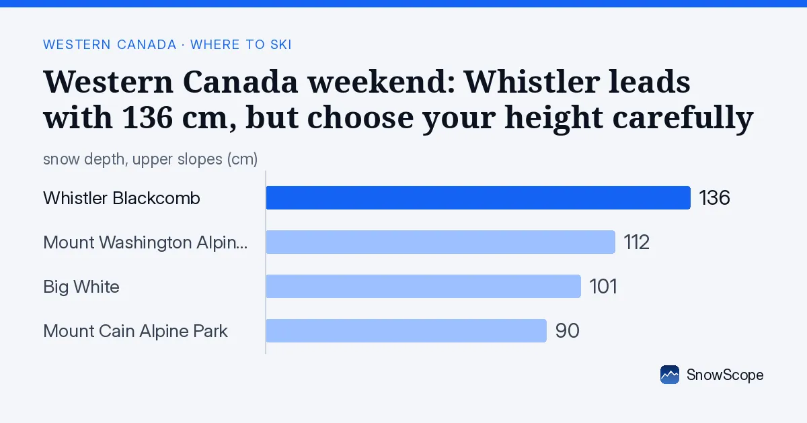
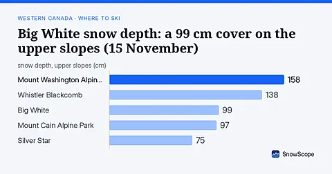
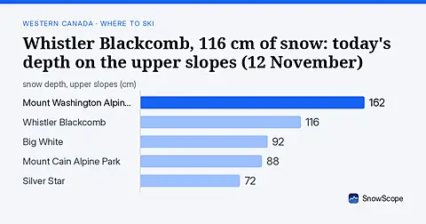

Western Canada weekend: Whistler leads with 136 cm, but choose your height carefully
Whistler Blackcomb sits at the top of the Western Canada snow rankings this weekend with 136 cm on upper slopes, well ahead of Mount Washington Alpine Resort at 112 cm. However, the story changes when you drop elevation: snow depth falls sharply below 1500 m across all major resorts, so plan your runs carefully.
See the live snow forecast for Whistler Blackcomb in the SnowScope appSnow depth, powder alerts and the 3D map, free.
Upper slopes hold the snow
Whistler Blackcomb dominates the region with 136 cm on upper slopes today. Mount Washington Alpine Resort reaches 112 cm on its upper slopes, while Big White and Mount Cain Alpine Park hold 101 cm and 90 cm respectively. All four resorts show skiable snow at their peaks, so if you can reach high terrain, you will find reasonable depth.
The elevation difference matters a lot this early in the season. Big White sits highest overall (peak at 2271 m, base at 1512 m), so its snow benefits from colder air. Whistler Blackcomb's peak reaches 2259 m. At these heights, the snow pack is firmer and more stable than lower down.
| Resort | Snow depth | New snow, 72 h | Coming, next days | Top |
|---|---|---|---|---|
| Whistler Blackcomb | 136 cm | 0 cm | 0 cm | 2,259 m |
| Mount Washington Alpine Resort | 112 cm | 1 cm | 1 cm | 1,569 m |
| Big White | 101 cm | 0 cm | 0 cm | 2,271 m |
| Mount Cain Alpine Park | 90 cm | 0 cm | 0 cm | 1,616 m |

The critical drop below 1500 metres
This is where the weekend challenge lies. At 1456 m on Whistler Blackcomb, depth falls to 49 cm. Big White at mid-elevation (1891 m) has only 12 cm. Base elevations across the region (653 to 1512 m) are barely covered or bare: Whistler Blackcomb's base sits at 0 cm. This is not unusual for mid-November in the mountains, but it limits which runs you can ski safely.
Thin cover means rocks or stumps can lie just beneath the surface. Early-season snow has not had time to bond, so lower slopes are risky even when they look white from a distance. If your resort opens terrain below 1500 m, stay on groomed runs only.
Temperature and slope aspect this weekend
The freezing level on Saturday will drop from 660 m in the morning to 920 m by afternoon, so lower slopes will warm and soften as the day passes. This means your morning runs will be firmer; afternoon runs on south-facing terrain will be slushy or will have exposed more rocks.
North-facing slopes at any height keep snow longest because they avoid direct sun. If your resort has north-facing terrain at 1800 m or higher, that is where you will find the most stable skiing on Saturday and Sunday. South-facing slopes at similar heights will be softer and more variable.
No fresh snow forecast; change coming later
No fresh snow arrives Friday, Saturday, or Sunday across Western Canada. You are working with what fell in earlier storms. Saturday looks drier than today, and Sunday follows the same pattern. However, the seven-day outlook suggests change is coming: Whistler Blackcomb may see 20 cm by next Thursday at the top, and Mount Washington Alpine Resort shows up to 37 cm possible over the next week.
This weekend is a holding pattern. Next week should bring more snow, but for the next three days, conditions will remain stable and cool rather than fresh.
How this weekend compares with past seasons
At mid-elevation on Whistler Blackcomb (1456 m), the snow depth today ranks below all previous 46 years on this date; normally you would see 113 cm at this height by 19 November. Big White at mid-height (1891 m) is deeper than 33 of those 46 past years, so it is performing better. Mount Cain Alpine Park sits deeper than 19 of 46 past years at similar height.
The region as a whole is running behind where it usually sits in mid-November, but the trend is upward. Early November snow is fragile; the region gained 33,000 km² of snow cover in two days (from 17 to 19 November), so more terrain is becoming skiable week by week.
Before you go: lift status and safety
Check the resort website before you drive: not all lifts open in November, and some high terrain may still be closed. Whistler Blackcomb, with the deepest early-season cover, is your best bet if you want reliable skiing. Mount Washington Alpine Resort offers a quieter option at similar depth.
If you plan any off-piste skiing, read the official avalanche bulletin first. Early-season snowpack is fragile and changes rapidly with temperature swings. Stay on groomed pistes unless conditions are confirmed safe by your local avalanche service.
Tips for skiers
- Ski above 1800 m this weekend: snow depth drops sharply below that height across all resorts, and thin cover hides rocks.
- Choose north-facing slopes where snow lasts longest, especially at mid-elevations. South-facing terrain will soften in the afternoon.
- Ski early in the day on lower slopes if you go there: the freezing level rises through Saturday morning, so afternoon runs will be softer or more variable.
- Check the resort website for lift status before you drive; not all terrain opens in November.
- Before you ski off-piste, read the official avalanche bulletin. Early-season snow is unstable and bonds poorly to what lies beneath.
About these numbers
Resort snow depths are the deepest snow on the resort's upper slopes on the date shown; they are estimates for an area, not a measurement at one point. Forecasts can change. Always read the official avalanche bulletin before going off-piste.
Official avalanche bulletins: Avalanche Canada
Cite this report
For research, teaching or the press: the numbers and charts are free to reuse under CC BY 4.0 with this citation.
SnowScope (2026), Western Canada weekend: Whistler leads with 136 cm, but choose your height carefully, https://snowscope.app/blog/en/2026/11/western-canada-where-to-ski-this-weekend-19-november-2026.html, accessed 2026-11-19
SnowScope (Atlas Labs). (2026, November 19). Western Canada weekend: Whistler leads with 136 cm, but choose your height carefully. SnowScope snow reports. https://snowscope.app/blog/en/2026/11/western-canada-where-to-ski-this-weekend-19-november-2026.html
BibTeX
@misc{snowscope2026westerncanadawheretoskit,
author = {{SnowScope (Atlas Labs)}},
title = {Western Canada weekend: Whistler leads with 136 cm, but choose your height carefully},
year = {2026},
month = nov,
howpublished = {\url{https://snowscope.app/blog/en/2026/11/western-canada-where-to-ski-this-weekend-19-november-2026.html}},
note = {Published 2026-11-19 16:09 UTC; accessed 2026-11-19}
}· CC BY 4.0 · Methods, data and tools →
Whistler Blackcomb: snow and temperature by height, this winter vs last (tools) →
Follow Whistler Blackcomb
Free: a message when fresh snow is coming, and the forecast every morning.
More snow reports

At Big White on 15 November, the upper slopes hold 68 cm near the summit while the base remains bare; an extreme vertical gradient typical of early season.

Whistler Blackcomb holds 116 cm on the upper slopes as of 12 November, with 83 cm forecast over the next three days. Mount Washington Alpine Resort leads the region at 162 cm.

Whistler Blackcomb leads Western Canada with 153 cm on upper slopes. Snow covers 398,620 km² across 52 of 57 resorts on 22 November.